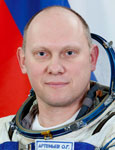

STATE ORGANIZATION
"GAGARIN RESEARCH AND TEST COSMONAUT
TRAINING CENTER"
"GAGARIN RESEARCH AND TEST COSMONAUT
TRAINING CENTER"
|
STATE ORGANIZATION "GAGARIN RESEARCH AND TEST COSMONAUT TRAINING CENTER" |
 |
Biographical Data |
||
Oleg Germanovich Artemiev
Roskosmos Test Cosmonaut
PERSONAL DATA: Born December 28, 1970, in Riga, Latvia.
EDUCATION: In 1990 graduated from the Tallinn Polytechnic Institute.
In 1998 graduated from the Moscow Bauman Technical University with a degree in low temperature physics and technology.
EXPERIENCE: In 1990 – 1991 he served in the Soviet Army in Vilnius, Lithuanian Soviet Socialist Republic (presently Lithuanian Republic).
Since 1998 till 2011 worked at the Energia Rocket Space Corporation.
COSMONAUT SELECTION DATE AND CLASS: In January 2003 successfully passed technical examinations at the Energia Rocket Space Corporation.
On May 29, 2003, the Interdepartmental Board assigned him to the GCTC Cosmonaut Corps for basic training.
On June 16, 2003, he started basic training for spaceflight and completed the training course on June 28, 2005, by passing state examinations at the GCTC with excellent scores.
On July 5, 2005, he was certified as a test cosmonaut.
SPACEFLIGHT TRAINING: January 29-31, 2005, Artemiev participated in winter survival training with Michael Barratt and Sandra Magnus, NASA astronauts, as a crew commander. Emergency landing of the Soyuz Descent Module was simulated in the Moscow Region forest and lasted for two days.
June 2-10, 2006, he took part in water survival training with Yuri Lonchakov and Oleg Skripochka. The Soyuz Descent Module emergency landing to the water was simulated near Sevastopol, Ukraine.
January 16-27, 2007, participated in winter survival training with Charles Simonyi from the USA and Sergey Revin in the forest 30 km away from Moscow.
November 15-29, 2007, he participated in a 14-day-long test as a part of the MARS-500 Experiment.
From March 31 to July 14, 2009, took part in a 105-day-long preparatory experiment for MARS-500.
CURRENT STATUS: Since 2011 he is a test cosmonaut of the Roscosmos Cosmonaut Corps.
JANUARY 2013